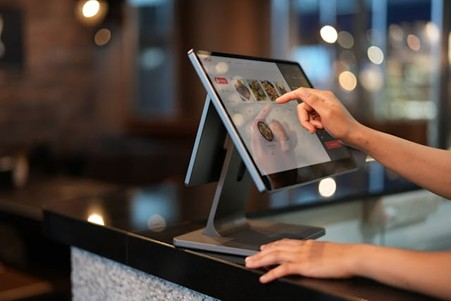
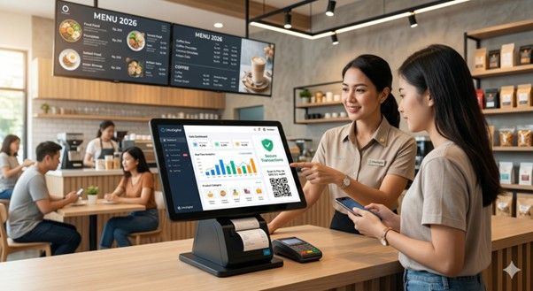

Keuntungan Menggunakan POS untuk UMKM

Di era digital saat ini, UMKM dituntut untuk beradaptasi dengan teknologi agar tetap mampu bersaing. Salah satu solusi yang banyak digunakan adalah sistem POS (Point of Sale), yang membantu pelaku usaha mengelola operasional bisnis secara lebih efisien dan terstruktur.
Sistem POS memberikan berbagai manfaat, salah satunya adalah pencatatan transaksi yang otomatis dan akurat. Setiap penjualan akan langsung tercatat dalam sistem secara real-time, sehingga meminimalkan kesalahan dan mempercepat proses pelayanan kepada pelanggan.

Selain itu, POS juga memudahkan pemantauan stok dan penjualan. Setiap transaksi yang terjadi akan langsung memperbarui jumlah stok barang, sehingga pelaku usaha dapat mengetahui kondisi persediaan tanpa harus melakukan pengecekan manual. Hal ini sangat membantu dalam menghindari kekurangan atau kelebihan stok.
Keunggulan lainnya adalah kemampuan dalam menghasilkan laporan secara instan. Data penjualan yang sudah terintegrasi memungkinkan sistem untuk menyusun laporan keuangan dengan cepat, sehingga pelaku usaha dapat mengambil keputusan berdasarkan data yang akurat.
Sistem POS juga mendukung berbagai metode pembayaran digital seperti QRIS dan e-wallet, yang memberikan kemudahan bagi pelanggan dalam bertransaksi. Selain meningkatkan kenyamanan, hal ini juga membantu bisnis terlihat lebih modern dan profesional.
BantuKasir POS hadir sebagai solusi yang membantu UMKM dalam mengelola bisnis secara otomatis dan terintegrasi. Dengan fitur pencatatan real-time, manajemen stok, serta laporan yang lengkap, BantuKasir POS mendukung efisiensi operasional dan meminimalkan kesalahan.